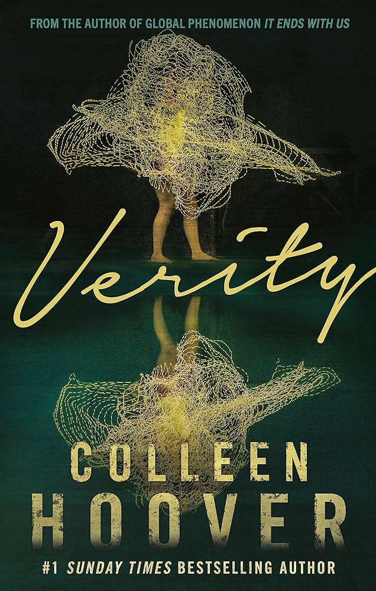

Outline
Colleen Hoover's seamless transition into the suspense genre is a testament to her exceptional storytelling skills. Brace yourself for a dark and twisted journey that will leave you questioning the boundaries of truth and fiction. "Verity" is a masterpiece that deserves a place on every thriller lover's bookshelf.